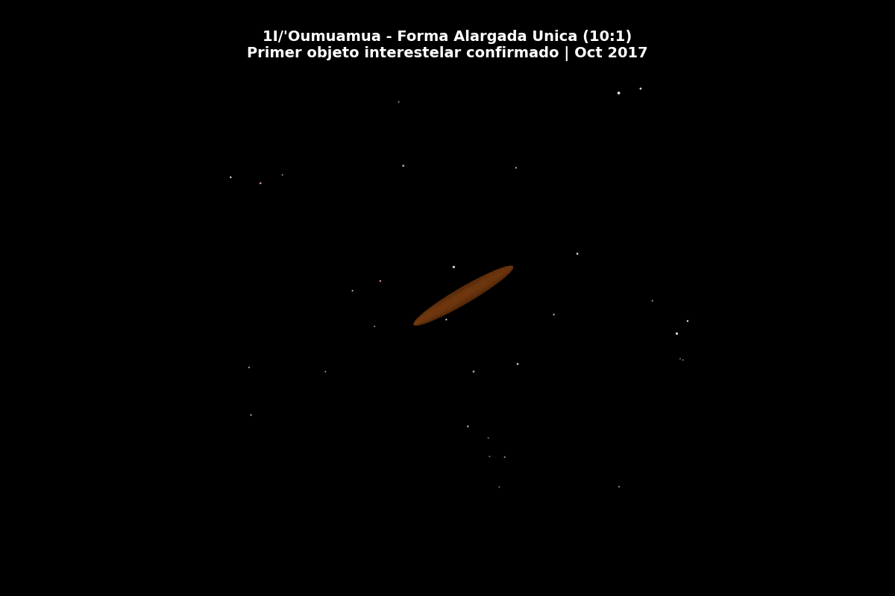

i3 Atlas
Deep Learning vs Machine Learning sobre Datos Astronomicos Reales
Analisis comparativo con Apache Spark de los 3 objetos interestelares del Sistema Solar
Deep Learning vs Machine Learning sobre Datos Astronomicos Reales
Analisis comparativo con Apache Spark de los 3 objetos interestelares del Sistema Solar
Forma: Alargada 10:1 (~200m)
Perihelio: 0.255 AU
Velocidad: 26.3 km/s
Origen: Direccion de Vega
Forma: Cometa con coma (~1km)
Perihelio: 2.007 AU
Velocidad: 32.2 km/s
Origen: Direccion de Casiopea
Forma: Cometa activo (~2km)
Perihelio: 1.35 AU
Velocidad: 60 km/s (220,000 km/h)
Origen: Centro galactico (Sagitario)

Comparativa de las trayectorias hiperbolicas de 'Oumuamua, Borisov y ATLAS atravesando el Sistema Solar

El tercer objeto interestelar confirmado, viajando a 220,000 km/h desde el centro galactico

Rotacion del misterioso objeto con proporcion 10:1, el primer visitante interestelar confirmado
APIs JPL + SDSS
Limpieza distribuida
RF, SVM, XGBoost
DNN, Autoencoder, CNN
ML vs DL metricas
Plotly 8 pestanas
GIFs cinematicos
i3 Atlas - Big Data con Python
Prof. Juan Marcelo Gutierrez Miranda | @TodoEconometria
Dashboard · GitHub · todoeconometria.com
Datos: JPL Small-Body Database (NASA) + SDSS | Visualizaciones: Plotly + Matplotlib